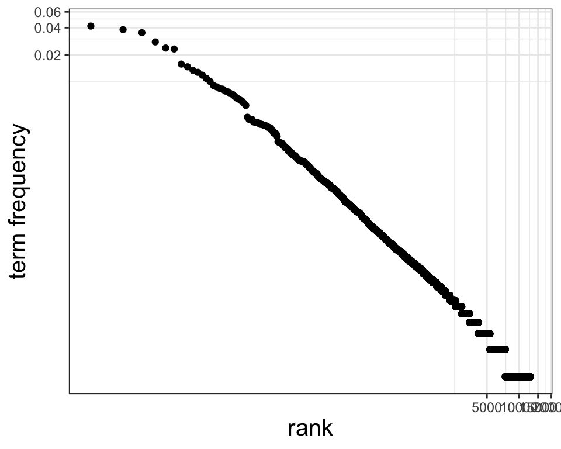
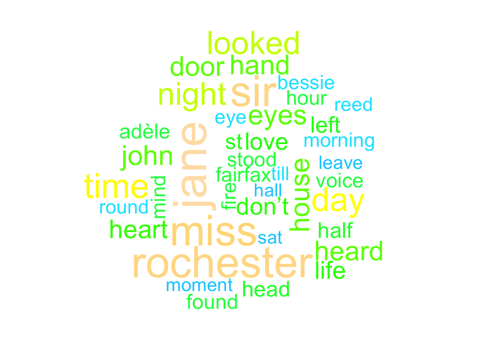
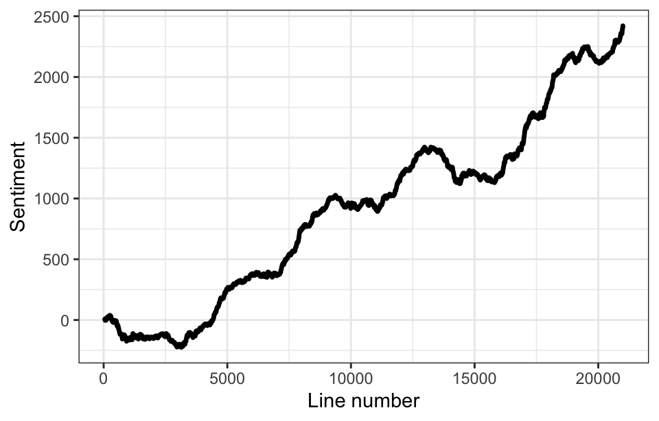
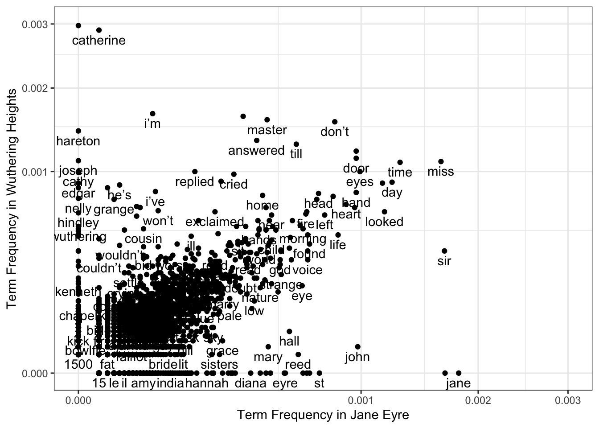

text_Hesse <- readLines("data/hesse_quote.txt")
text_Hesse[1] "Some of us think holding on makes us strong,"
[2] "but sometimes it is letting go." Text data occurs in various forms: short messages (Twitter/X, Instagram, etc.), websites, books, etc. There are many real-world applications where we need to extract information from text data. Just to list a few examples:
Search engines need to evaluate whether a website is relevant to us;
Identification of messages (out of billions) that are relevant to prevent serious crimes;
Interactive customer service pages have to provide a good response to our question.
Text data analysis (also known as text mining) refers to the area of data science that considers the derivation of information from text data. These methods are also important in the context of natural language processing.
In this chapter we explore some important text data analysis techniques. Section 3.1 introduces methods for visualizing the frequency of words within a text. Section 3.2 then explores sentiment analysis, which is concerned with studying the intention of a text. In Section 3.3 we outline approaches for comparing text data sets based on word frequency. Finally, Section 3.4 outlines a statistical framework for document classification.
Remark: We will focus on analyzing individual words within a document, but there are many more aspects that could be studied, such as the structure of sentences.
Consider the following quote by Hermann Hesse (a German-Swiss poet):
The text is stored in the file “Hesse quote.txt” on Moodle, with the quote being split into two lines as above. To load the data into R, we use the function readLines():
text_Hesse <- readLines("data/hesse_quote.txt")
text_Hesse[1] "Some of us think holding on makes us strong,"
[2] "but sometimes it is letting go." We see that text_Hesse is a vector with two entries, each entry corresponding to a line in the .txt file. The entries are of type character and are also referred to as strings, i.e, combinations of words.
Let’s store the data as a data frame:
quote_Hesse <- data.frame(line = 1:2, text = text_Hesse)The text data in its current format is of little use, because we usually want to analyze single words within a text. As such, we need to separate the strings into individual words. Further, any punctuation should be removed because we are not interested in it.
The function unnest_tokens() in the tidytext R package does all of this for us:
library(tidytext)
library(dplyr)
Hesse_tidy <- quote_Hesse %>% unnest_tokens(output = word, input = text)
Hesse_tidy %>% slice_head(n = 5) line word
1 1 some
2 1 of
3 1 us
4 1 think
5 1 holdingThe data are now stored in the column word. This format is known as the tidy text format and it follows two principles:
Each variable is a column: our variable of interest is word;
Each observation is a row: we have one word per row.
Now that the text is in this new format, compared to the previous chapters, the only difference is that we have to deal with non-numerical observations. However, there are a wide range of techniques unique to analyze of such data.
When analyzing text data, we often want to extract words which are used frequently. Bar plots and word clouds are widely applied graphics to visualize word frequency, i.e. the number of times a word appears. In the following, we demonstrate how these plots can be created in R for the book Jane Eyre by Charlotte Brontë.
The full text for Jane Eyre is freely available from Project Gutenberg; we only require the Gutenberg ID for the book, which is 1260.
URL <- "https://www.gutenberg.org/cache/epub/1260/pg1260.txt"
JaneEyre_raw <- readLines(URL, encoding = "UTF-8")We have to remove the meta data and disclaimers at the beginning and end of the file. We do this by detecting the lines containing the word “EBOOK”, which signals the beginning and end of the book:
ind <- grep("EBOOK", JaneEyre_raw)
JaneEyre_raw <- data.frame(text = JaneEyre_raw[(ind[1] + 1):(ind[2] - 1)])The individual rows in JaneEyre_raw represent one line from the book, as provided in the printed version stored on the Project Gutenberg website, with the first lines being from the title page.
After importing the data, we separate the lines of text into individual words using unnest_tokens():
JaneEyre <- JaneEyre_raw %>% unnest_tokens(word, text)A bit more data cleaning is required before starting the analysis. Specifically, some of the extracted words appear with an “_“, such as the eighth extracted word -”_illustrated”. This indicates that the word is printed in italics, but we do not want to tread “the” and “the” differently. To remove these underscores, we apply the gsub() function we saw in Problem Class 1:
JaneEyre$word <- gsub("_", "", JaneEyre$word)With the data in the tidy text format, the function count() from the dplyr R package can be used to extract the number of times each word was used. We further calculate each word’s proportion amongst the total number of words, called the term frequency, and its rank:
JaneEyre_Count <- JaneEyre %>%
count(word, sort = TRUE) %>%
mutate("term frequency" = n / sum(n), rank = row_number())
slice_head(JaneEyre_Count, n = 5) word n term frequency rank
1 the 7856 0.04169475 1
2 i 7172 0.03806451 2
3 and 6632 0.03519852 3
4 to 5238 0.02780004 4
5 a 4475 0.02375051 5Looking at the output, the words with the highest term frequency are the ones we usually use when writing a longer piece of text.
Before analyzing the words most commonly used in Jane Eyre in more detail, we create a plot of term frequency versus rank, both on logarithmic scale:
library(ggplot2)
ggplot(JaneEyre_Count, aes(x = rank, y = `term frequency`)) +
geom_point(size = 1.5) +
coord_trans(x = "log10", y = "log10") +
theme_bw() +
theme(axis.title = element_text(size = 15))
There is pretty much a linear relationship between rank and term frequency on logarithmic scale (apart from the words with the highest term frequency). This is known as Zipf’s Law which states that empirically a word’s term frequency is inversely proportional to its rank.
Remark: Creating this plot is not necessary in a text analysis. We just produced it to illustrate Zipf’s Law.
We saw that the five words with the highest term frequency in JaneEyre_Count include “the”, “I” and “and”. This is quite common when analyzing longer pieces of text. One may argue that such words are not of interest in an analysis, because we cannot write a text without using them.
This has led to the concept of stop words. The idea is to specify words that are dropped from the analysis, because they are not relevant. A set of stop words is called a stop list.
The tidytext R package provides its own list, stop_words, which includes 1149 stop words. We can remove these stop words from JaneEyre_Count using the function anti_join() from the dplyr R package:
data(stop_words)
JaneEyre_Count <- JaneEyre_Count %>% anti_join(stop_words)
slice_head(JaneEyre_Count, n = 5) word n term frequency rank
1 jane 341 0.001809815 69
2 rochester 317 0.001682438 71
3 sir 316 0.001677131 72
4 miss 310 0.001645287 73
5 time 244 0.001295000 98Let’s create a bar plot for the most commonly used words in Jane Eyre that are not on the stop list:
JaneEyre_Count %>%
slice_head(n = 10) %>%
mutate(word = reorder(word, n)) %>%
ggplot(aes(x = n, y = word)) +
geom_col() +
labs(x = "Count", y = "Word") +
theme_bw() +
theme(axis.title = element_text(size = 17), axis.text = element_text(size = 15))
We see that the names of two main characters, Jane Eyre and Edward Rochester, and their titles appear the most often, followed by “time”, “day”, “looked” and “night”.
Remark: When using ggplot2, words are by default ordered in alphabetical order, which is not what we want here. Therefore, mutate( word = reorder(word,n) ) is used to ensure that the words are instead ordered based on word frequency.
Word clouds are a type of graphic that we can use to visualize the frequency of words within a text. Instead of using the visual cues “position” and “length” as in a bar plot, frequency is illustrated via the “size” of the words.
The R package wordcloud provides a function to produce a word cloud. For Jane Eyre, we produce a word cloud of the 40 most common words (ignoring the stop words) as follows:

Remark: Word clouds are good when we want to visualize term frequency for a large number of words. In all other cases, a bar plot is the better choice in terms of accessibility and the amount of information it provides.
In many applications we want to understand the emotional intent (sentiment) of a text. For instance, we may want to quickly determine whether a product has generally received more positive than negative reviews or not.
Here we make the (strong) assumption that the sentiment of a text can be described by the aggregated sentiment of the individual words within it. This leads to the task of measuring the sentiment of a word. In text mining and natural language processing, sentiment lexicons are usually used when analyzing individual words. The tidydata R package provides access two sentiment lexicons:
AFINN: Words are assigned a sentiment score between -5 and +5, with lower values corresponding to a more negative sentiment. For instance, “anxious” has a score of -2, while “pretty” has a score of 1.
Bing: Words are categorized as “positive” (e.g. “pretty”) or “negative” (e.g. “anxious”).
Words not listed within the lexicon are considered “neutral” in terms of sentiment. We now apply these two sentiment lexicons to analyze the sentiment in Jane Eyre.
To load the AFINN sentiment lexicon, we use the get_sentiments() function in the tidytext package:
# library(textdata)
# lexicon_afinn()
AFINN <- get_sentiments("afinn")Let’s again prepare the data and store the line number for later use:
JaneEyre <- JaneEyre_raw %>%
mutate(line = row_number()) %>%
unnest_tokens(word, text) %>%
mutate(word = gsub("_", "", word))The next step is to extract the words that are in both Jane Eyre and the AFINN sentiment lexicon:
JaneEyre_AFINN <- inner_join(JaneEyre, AFINN)It is important to note that sentiment lexicons have certain limitations. For instance, the word “miss” is associated with a negative sentiment within the AFINN sentiment lexicon, but in Jane Eyre it is usually used as the title of a young, unmarried woman - so we should better ignore the word “miss” in the analysis.
Important: When considering sentiment, we should not remove any stop words to ensure that our analysis considers all words in the text.
Let’s create a plot to see how the aggregated sentiment evolves over the course of the novel, and we filter out the word “miss” based on our previous argument:

The plot suggests that the first chapters of Jane Eyre have a more “negative” sentiment, while, as the story progresses, the novel develops a more “positive” sentiment.
Another way to visualize sentiment is to group lines into sections and to derive the sentiment of each section. Here we split the book into its chapters. We need some functions form the stringr package to identify the lines which start with “Chapter” and we then use this information to assign a chapter number to each line:
We now remove any lines that do not belong to one of the chapters and then split the book as before:
Finally, we calculate and visualize the aggregated sentiment for each chapter

The plot shows a similar pattern to that identified for Figure @ref(fig:AFINN). If we consider a chapter with an AFINN score above 0 as “positive”, and “negative” otherwise, we find that the sentiment tends to remain “positive” across multiple consecutive chapters.
When working with the Bing sentiment lexicon, we may count the numbers of “positive” and “negative” words in each chapter and visualize their proportions numbers using a stacked bar plot:
Bing <- get_sentiments("bing")
JaneEyre_chapters %>%
inner_join(Bing) %>%
group_by(chapter) %>%
count(chapter, sentiment) %>%
ggplot(aes(x = chapter, y = n, fill = sentiment)) +
geom_col(position = "fill") +
geom_hline(yintercept = 0.5, color = "black", linewidth = 1.1) +
theme_bw() +
labs(x = "Chapter", y = "Proportion")
When comparing the two bar plots, and assuming that a chapter with a proportion of “positive” words above 50% is “positive”, we find good agreement in terms of whether a chapter has a “positive” or “negative” sentiment.
Important: Due to our assumption that the sentiment can be measured by considering the individual words, we should be cautious with making conclusions on whether a chapter is “positive” or “negative”. Nevertheless, the change in sentiment score still provides us with some information on which chapters tell a more “positive” story and which ones a more “negative” story, that is, we can still make conclusions by comparing the scores.
Suppose that we have two separate texts / documents. In such cases, we may want to compare the term frequency of the various words in the two texts using a scatter plot.
Let’s compare Jane Eyre to the novel Wuthering Heights by Emily Brontë, Charlotte Brontë’s sister. The first step is to calculate term frequencies for Wuthering Heights, just as we did for Jane Eyre:
URL <- "https://www.gutenberg.org/files/768/768-0.txt"
WutheringHeights_raw <- readLines(URL, encoding = "UTF-8")
ind <- grep("EBOOK", WutheringHeights_raw)
WutheringHeights_raw <- data.frame(text = WutheringHeights_raw[(ind[1] + 1):(ind[2] - 1)])
WutheringHeights <- WutheringHeights_raw %>%
unnest_tokens(word, text) %>%
mutate(word = gsub("_", "", word)) %>%
count(word, sort = TRUE) %>%
mutate("term frequency" = n / sum(n)) %>%
anti_join(stop_words)To compare term frequencies, we combine the two data frames for Jane Eyre and Wuthering Heights:
Before analyzing the term frequencies, we have to account for words that only appear in one book being given a value of NA, such as the word “Jane”. Therefore, we replace any \(\mathrm{\texttt{NA}}\) entry with with a value of 0 (as we did in Problem Sheet 2, Tutorial Question 2):
Finally, we create our scatter plot of the term frequencies
ggplot(frequency_combined, aes(x = JaneEyre, y = Heights)) +
geom_point() +
geom_text(aes(label = word), check_overlap = TRUE, vjust = 1.5) +
xlim(c(0, 0.003)) +
ylim(c(0, 0.003)) +
coord_trans(x = "sqrt", y = "sqrt") +
theme_bw() +
labs(
x = "Term Frequency in Jane Eyre",
y = "Term Frequency in Wuthering Heights"
)
Words close to the line, such as “door” or “time”, have a similar frequency in the two books while words that are far from the line, for instance, “Catherine” and “John”, are more specific to one of the books.
We already saw in the analysis of Jane Eyre that we use term frequency to measure frequency of a word \(t\) within a text or document \(d\). The formal definition of term frequency is [ (t,d)=. ]
Suppose that we now want to study the frequency of a word \(t\) across a corpus \(D\), that is, a set of documents. The inverse document frequency \(\mathrm{idf}(t,D)\) measures how common or rare the word \(t\) is across \(D\). Formally, \(\mathrm{idf}(t,D)\) is defined as
[ (t,D) = () = (), ] where \(|D|\) denotes the cardinality of the set \(D\), i.e., the number of documents in \(D\).
We can also say that \(\mathrm{idf}(t,D)\) describes how specific the word \(t\) is to a document within \(D\). If \(t\) is contained in all documents, we get \(\mathrm{idf}(t,D)=0\), while \(\mathrm{idf}(t,D)=\log |D|\) if \(t\) only appears in a single document. Consequently, a smaller value for \(\mathrm{idf}(t,D)\) corresponds to \(t\) being more common across the documents in \(D\).
Finally, we define the term frequency-inverse document frequency (tf-idf) as [ (t,d,D)=(t,d) (t,D). ]
Let’s consider some scenarios
To get a very high value for \(\mathrm{tf.idf}(t,d,D)\), we need \(t\) to occur frequently within the document \(d\), and not in any other document in \(D\).
If \(t\) occurs across all documents in the set \(D\), we have \(\mathrm{tf.idf}(t,d,D)=0\). For instance, very common words such as \(t\)=“the” or \(t\)=“and” highly likely yield \(\mathrm{tf.idf}(t,d,D)=0\). This is a nice feature, because we are usually not interested in these stop words.
So the term frequency-inverse document frequency is useful to assess how important a word is to a document, in relation to the overall set of documents. This feature is the reason that tf-idf is widely applied in search engines and text-based recommender systems. For instance, if we want to search for a website on a specific subject, described by a word \(t\), the suggestions provided by the search engine may use \(\mathrm{tf.idf}(t,d,D)\) to rank websites, where \(D\) comprises all the websites considered by the search engine.
Suppose our corpus comprises four books by Charles Dickens: A Christmas Carol, A Tale of Two Cities, Great Expectations and Oliver Twist. The text for the books from Project Gutenberg is available as “Dickens.csv” on Moodle:
Dickens_raw <- read.csv("data/dickens.csv" )As in the analysis of Jane Eyre and Wuthering Heights, we use the unnest_tokens() function to separate the text into individual words, and we use gsub() to remove any underscores:
Dickens <- Dickens_raw %>%
unnest_tokens(word, text) %>%
mutate(word = gsub("_", "", word))Next we count the number of appearances of each word separately for each of the books:
title word n
1 Oliver Twist the 9633
2 Great Expectations the 8145
3 A Tale of Two Cities the 8053
4 Great Expectations and 7098
5 Great Expectations i 6667
6 Oliver Twist and 5428The quantities \(\mathrm{tf}(t,d)\), \(\mathrm{idf}(t,D)\) and \(\mathrm{tf.idf}(t,d,D)\) for all terms and books are then calculated from this table using the function bind_tf_idf() in the tidytext package:
title word n tf idf tf_idf
1 A Christmas Carol scrooge 327 0.011047297 1.39 0.015314806
2 Oliver Twist oliver 876 0.005396980 1.39 0.007481803
3 A Tale of Two Cities lorry 369 0.002664549 1.39 0.003693849
4 Oliver Twist bumble 397 0.002445892 1.39 0.003390726
5 Oliver Twist sikes 354 0.002180971 1.39 0.003023468
6 A Tale of Two Cities defarge 302 0.002180742 1.39 0.003023150We see that the words with the highest tf-idf are the names of the protagonists in the four books, while the term “the”, that had the highest count, is not there. It’s also common to say that “scrooge” is the most specific term across the considered set of books. The names with the highest tf-idf are also specific to a book and that’s why they have an idf of \(\log 4 \approx 1.39\).
So far, we have extracted the most common words within a text, and analyzed its sentiment. However, this information may not be sufficient in applications, e.g.:
When working with a large collection of blog posts, news articles or scientific papers, we often wish to label these documents based on their content. It may be difficult to do this just based on the most common words.
Summarizing a long piece of text in a few sentences. We cannot assume that the most common words or the sentiment are necessarily the important pieces of information.
This has led to the development of several statistical and natural language processing methods. In this chapter we introduce topic modeling, which aims to to discover “natural” groups (topics) of words, even when we are not sure what we are looking for.
While there exists several approaches for topic modelling, we only explore Latent Dirichlet allocation (LDA), which is a particularly popular method. The key idea is to treat each document as a mixture of topics, and each topic as a mixture of words. Let’s illustrate these principles:
Every document is a mixture of topics. We imagine that each document may contain words from several topics in particular proportions. For example, in a two-topic model we could say “Document 1 is 90% topic A and 10% topic B, while Document 2 is 30% topic A and 70% topic B.”
Every topic is a mixture of words. Suppose we considered BBC news and had topics such as “politics”, “sports”, “entertainment”, etc. The most common words in the “politics” topic might be “prime minister”, “Commons”, and “government”, while the “sports” topic includes “football”, “cricket”, etc. Importantly, words can be shared between topics; a word like “bench” might appear in both topics with the same frequency.
This framework allows documents to “overlap” each other in terms of content, in a way that mirrors typical use of natural language, rather than being separated into discrete groups. Based on a set of documents, the aim is then to find the mixture of words that is associated with each topic, while also determining the mixture of topics that describes each document at the same time.
Remark: The framework above is different from the clustering methods you may have seen before, e.g., such as \(k\)-means where each data point belongs to exactly one cluster. LDA belongs to the class of soft (or fuzzy) clustering methods, which allow for a data point (in this case a document) to belong to more than one cluster.
Let’s dive briefly into the mathematics behind the LDA approach before focusing on exploring how to fit the model and interpret the results. We start by introducing the Dirichlet distribution:
Definition: The Dirichlet distribution is a family of continuous multivariate probability distributions on the d-dimensional unit simplex \(\{(x_1,\ldots,x_d)\in\mathbb{R}_+^d: x_1+\cdots+x_d=1\}\) with \(d>1\). A Dirichlet distribution is parametrized by a \(d\)-dimensional vector of positive reals.
Now suppose we have a corpus with \(N\) documents, with a total of \(M\) different words, and we specify that there are different \(K\) topics. The LDA approach then describes two Dirichlet distributions.
Distribution of words within a topic: The term frequencies with which the \(M\) distinct words are expected to appear within a document from topic \(k\in\{1,\ldots,K\}\) is described by a M-dimensional Dirichlet distribution, where each topic has its own set of parameters.
Distribution of topics within a document: The proportions \((\psi_{i,1},\ldots,\psi_{i,K})\) with which the \(K\) topics feature in document \(i\in\{1,\ldots,N\}\) are modelled via a \(K\)-dimensional Dirichlet distribution. These proportions allow us to group the different documents.
We will stop considering the theoretical details of the LDA approach at this point, because the estimation of the parameter vectors is too complex to be covered in a Year 2 unit (we would require tools from Bayesian statistics). In the following, we study two examples to illustrate how to perform topic modelling in R.
To illustrate LDA we first consider an example where we know the ‘truth’. Here we will take two books by Charles Dickens and split each up into their individual chapters. We then want to see how well LDA performs at distinguishing between the two books.
We consider the books Great Expectations and A Tale of Two Cities we studied previously:
We want to split the books into their chapters, with each chapter being handled as a separate document. As in Section 3.2, we extract the chapter the individual lines in the text document belong to:
The next step is to remove any text before the first chapter, and we further us the unite() function from the tidyr R package to create an identifier document from the book title and chapter number:
Finally, we split the documents into words, remove any stop words, and count the frequency for each word within each document, as we did when analyzing word frequency:
Remark: Stop words are removed because they usually perform poorly at explaining differences in the underlying topics. Further, their high prevalence in all topics leads to topics appearing more similar than they are.
The R package we are using for topic modelling requires the data to be stored as a document term matrix which takes the following form:
Each row represents one document (a book chapter in our case).
Each column corresponds to one term / word.
Each entry contains the number of appearances of a term in a document.
The tidytext package provides the cast_dtm() function to create such a matrix, but we need to install the tm R package to do this:
With everything in place, we now use the LDA() function in the topicmodels R package. One key decision we have to make is specifying the number \(K\) of topics. For the purpose of this analysis, it seems logical to set the number of topics to \(K=2\):
Remark: The estimates are sensitive to the value we specify in control=list(seed=…). In this course you may ignore the sensitivity and focus on analyzing the results obtained.
Having fitted the model, we want to explore the estimated model parameters. Recall that we have
\(K\) parameters per document, which represent how much the \(K\) topics feature in the document
\(M\) parameters per topic, which give insight on how frequent each word features within a topic
To extract the \(K\) proportions for each of the documents, we use the following R code:
Dickens_topics <- tidy(Dickens_LDA, matrix = "gamma")
Dickens_topics %>% slice_head(n = 4)# A tibble: 4 x 3
document topic gamma
<chr> <int> <dbl>
1 Great Expectations_57 1 0.310
2 Great Expectations_7 1 0.190
3 Great Expectations_38 1 0.370
4 Great Expectations_17 1 0.237The values in the column gamma correspond to the estimated proportions. We see that Chapter 7, 17, 38 and 57 from Great Expectations feature more of Topic 2 than Topic 1.
Given the high number of chapters, it’s better to visualize the estimates in order to discuss agreement between the estimated topics and the underlying truth. One option is to create box plots:
Dickens_topics %>%
separate(document, c("title", "chapter"), sep = "_", convert = TRUE) %>%
ggplot(aes(x = factor(topic), y = gamma)) +
facet_wrap(~title) +
geom_boxplot() +
labs(x = "Topic", y = "Proportion")
We see a clear difference in the plots for the two books. Most of the chapters from A Tale of Two Cities mostly consist of words that belong to Topic 1, while for Great Expectations the chapters are composed of words from Topic 2. As such, the topics could be used to classify the individual chapters.
Suppose we would label a chapter as “A Tale of Two Cities” if the proportion of text estimated to be from Topic 1 exceeds 0.5. Such a classification would work well, with only one chapter per book being misclassified. This result may be due to some chapters rarely mentioning important characters and given that both books were written by Charles Dickens, correctly labeling these chapters is more challenging.
Let’s look at the words most common in the different topics. We extract the top five words for each topic:
# A tibble: 6 x 3
# Groups: topic [2]
topic term beta
<int> <chr> <dbl>
1 1 lorry 0.00690
2 1 hand 0.00634
3 1 time 0.00600
4 2 joe 0.0146
5 2 miss 0.00951
6 2 don 0.00812It seems that character names plan an important role when deciding whether a text belongs to Topic 1 or Topic 2, which is kind of what we expect. Let’s produce a plot to compare the term frequencies for the different words in more detail:
tidy(Dickens_LDA, matrix = "beta") %>%
mutate(topic = case_when(topic == 1 ~ "Topic1", topic == 2 ~ "Topic2")) %>%
pivot_wider(names_from = topic, values_from = beta, values_fill = 0) %>%
ggplot(aes(x = Topic1, y = Topic2)) +
geom_point() +
geom_text(aes(label = term), check_overlap = TRUE, vjust = 1) +
coord_trans(x = "sqrt", y = "sqrt") +
theme_bw() +
labs(x = "Term Frequency in Topic 1", y = "Term Frequency in Topic 2")
The plot shows some very interesting patterns. In particular, the two topics seem to mainly differ in terms of the term frequency of a subset of words (the ones located close to the axes), while the term frequencies are very similar for the majority of words.
Let’s look at an example where there is no ‘truth’ as such. The file “NYT.csv” provides metadata for 1289 articles published by the New York Times in their “Europe” subsection between 01/01/2023 and 01/11/2024:
NYT <- read.csv("data/nyt.csv" )Specifically, the data file gives for each article the lead paragraph and the date it was published. We want to explore the results we obtain when applying LDA.
Since we take each article to be a separate document, we first assign a unique identifier to each article:
Now we follow the same procedure as in the previous analysis. As such, we start by splitting the sentences into individual words, remove any stop words and count the number of occurrences for each article individually:
The next step is to convert the counts into a document term matrix:
Finally, we are ready to run the LDA() function and we choose to set \(K=2\):
Let’s start by investigating the make-up of the articles. This requires us to explore with which proportions the two topics feature in the different articles. One option is to again create a box plot:

The result seems a bit unsatisfying as the make-up only varies between a 65-35 and 35-65 split. Consequently, the estimates suggests that there are very little differences in the language used within the topics.
To explore the topics in more detail, we plot the estimated term frequencies for the two topics against each other:
tidy(NYT_LDA, matrix = "beta") %>%
mutate(topic = case_when(topic == 1 ~ "Topic1", topic == 2 ~ "Topic2")) %>%
pivot_wider(names_from = topic, values_from = beta, values_fill = 0) %>%
ggplot(aes(x = Topic1, y = Topic2)) +
coord_trans(x = "sqrt", y = "sqrt") +
geom_point() +
theme_bw() +
geom_text(aes(label = term), check_overlap = TRUE, vjust = 1) +
labs(x = "Term Frequency in Topic 1", y = "Term Frequency in Topic 2")
This plot provides some more insight. We see that Topic 1 seems to feature more of the words related to the War in Ukraine, but it’s not a perfect plot - we note that for instance “missile” features more in Topic 2 although this topic mainly occurred in the context of the war.
To summarize, we find that LDA produces two topics which seem quite sensible, when considering the term frequencies of the words. However, it’s also important to point out that LDA does not really split the documents into separate groups, due to each document only containing a few words. This is quite a common feature, as the flexibility of the LDA approach comes at the cost of it requiring a lot of data for model fitting.
We considered several aspects related to the analysis of text data in R:
The tidy text format is useful for the analysis of text data
Word frequency can be visualized using bar plots or word clouds
Sentiment analysis can be used to study the emotional intent. We considered one approach based on sentiment lexicons, but also highlighted that we have to make a strong assumption
Documents can be compared by plotting term frequencies against each other and analyzing the term frequency - inverse document frequency
Latent Dirichlet allocation is one method that may be used for topic modelling, but results need to be studied carefully
Some other aspects one should be aware of:
We exclusively based our analyses on the individual words. However, in some applications it may be better to consider n-grams, which are compositions of \(n\) (usually consecutive) words. The unnest_tokens() provides options to extract n-grams from a text.
The principles introduced in this chapter can be applied to any type of text data, such as social media messages or song lyrics, and are not limited to short texts and books.
You should be mindful of copyright when scraping text data from the internet. That’s why we considered older books rather than recent bestsellers.